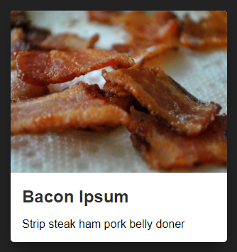
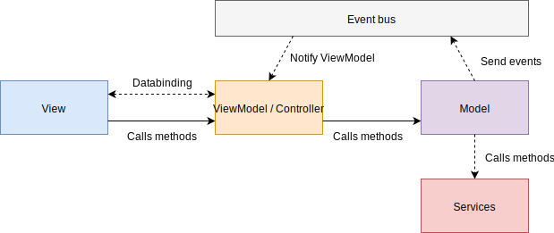

Formation Angular
JavaScript?
HTML + CSS + JS

|
||
| Données | Style | UX & AJAX |
"UX"
DOM manipulation
<div class="article">
<img src="http://placebacon.net/400/300" />
<a href="https://baconipsum.com/">
<h2>Bacon Ipsum</h2>
</a>
<p>Strip steak ham pork belly doner</p>
</div>JavaScript
function createArticle(article) {
var $article = document.createElement('div');
$article.className = 'article';
var $articleImage = document.createElement('img');
$articleImage.src = article.image;
$article.appendChild($articleImage);
var $articleLink = document.createElement('a');
$articleLink.href = article.link;
var $articleTitle = document.createElement('h2');
$articleTitle.textContent = article.title;
$articleLink.appendChild($articleTitle);
$article.appendChild($articleLink);
var $articleExcerpt = document.createElement('p');
$articleExcerpt.textContent = article.excerpt;
$article.appendChild($articleExcerpt);
return $article;
}jQuery
function createArticlejQuery(article) {
return $('<div class="article">')
.append($('<img>').attr('src', article.image))
.append($('<a>').attr('href', article.link)
.append($('<h2>').text(article.title)))
.append($('<p>').text(article.excerpt));
}Mieux...
Mais où est passé l'HTML ?
Quelques années plus tard...
AngularJS
<div class="article">
<img src="{{article.image}}" />
<a href="{{article.link}}">
<h2>{{article.title}}</h2>
</a>
<p>{{article.excerpt}}</p>
</div>Le frontend commence à se structurer

AngularJS
AngularJS n'est pas parfait
- Peu performant (détection des changements)
- Difficilement scalable (code-splitting)
- Peu d'outillage